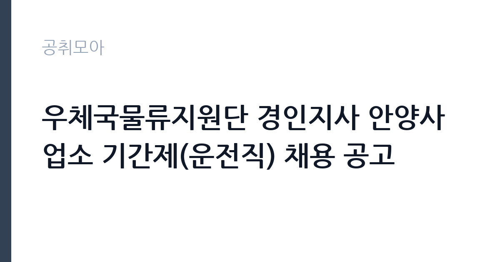

[공공기관] 우체국물류지원단 경인지사 안양사업소 기간제(운전직) 채용 공고
(재)우체국물류지원단 · 경기 · 마감 2026-10-22 (D-5) · 출처 잡알리오

한눈에 보는 모집 조건
| 기관 | (재)우체국물류지원단 |
|---|---|
| 공고명 | 우체국물류지원단 경인지사 안양사업소 기간제(운전직) 채용 공고 |
| 고용형태 | 기간제 |
| 근무지 | 경기 |
| 게시일 | 2026-10-16 |
| 마감일 | 2026-10-22 (D-5) |
지원자격, 이렇게 읽으세요
- 공공기관 채용공시
- 세부 조건은 원문 공고문 확인
공고문이 제시하는 요건은 세 가지입니다. 우체국물류지원단 인사규정상 결격사유가 없을 것, 연령 제한이 없을 것, 그리고 운전직으로서 1종 보통 면허를 보유하고 2.5톤 이상 화물탑차를 운전할 수 있을 것입니다. 여기에 2026년 10월 26일부터 근무가 가능한지가 실질 조건으로 붙습니다. 화물운송종사자격증이나 무사고 경력이 우대 항목으로 적용되는지도 공고문에서 확인하십시오.
이 공고의 포인트
우체국물류지원단은 우정사업본부의 물류 업무를 위탁받아 운영하는 기관으로, 우체국과 물류센터 사이의 우편물·소포 운송을 담당합니다. 운전직은 정해진 노선을 따라 집중구간과 간선 구간을 오가며 물량을 옮깁니다. 기간제이지만 우체국 물류 체계 안에서 근무하기 때문에 업무 강도와 근무 형태가 비교적 일정합니다. 안양사업소는 경인지사 권역에서 수도권 남부 물량을 처리하는 거점입니다.
전형은 어떻게 진행되나
서류전형에서 자격 요건과 결격사유를 확인한 뒤 면접전형을 진행합니다. 운전직 특성상 실제 운전 능력을 확인하는 절차가 포함될 수 있습니다. 면접 점수 60점 이상인 지원자 가운데 고득점 순으로 선발하는 방식이 일반적입니다. 최종합격자는 개별 통지되며, 근무 시작일이 정해져 있어 이 날짜에 맞출 수 없는 경우 선발에서 제외될 수 있습니다.
원문에서 확인한 전형 방식
□ 우체국물류지원단 인사규정에 따른 결격사유가 없는 자 □ 연령제한 없음(공고일 기준) □ 2026.10.26.(월요일) 근무 가능자 □ 운전직: 1종보통 운전면허 보유자, 2.5톤이상 화물탑차 운전 가능자
이런 분께 추천해요
- 화물 차량 운전 경력이 있고 안전 운전 기록을 관리해온 지원자
- 안양·군포·의왕 등 경인 남부 생활권에 거주하는 사람
- 단기 계약이라도 물류 현장 경험을 쌓으려는 지원자
지원 전 체크리스트
- 1종 보통 면허와 화물탑차 운전 가능 여부를 공고문 기준으로 확인
- 10월 26일부터 근무 가능한지 일정 점검
- 결격사유 조회를 대비해 신원 관련 서류 준비
- 마감이 10월 22일로 짧으므로 즉시 접수
모집 일정과 제출 타이밍
접수는 공고 게시일부터 10월 22일까지입니다. 채용 절차가 서류와 면접으로 짧게 진행되므로 접수 후 일주일 안에 면접 일정이 잡힐 수 있습니다. 근무 시작일이 10월 26일로 정해져 있어 합격 발표와 임용 절차가 압축적으로 진행됩니다. 접수 방법과 제출서류는 우체국물류지원단 누리집 공고문에서 확인하십시오.
직무 이해하기: 공공기관
운전직의 하루는 차량 점검에서 시작합니다. 적재함 상태와 타이어, 유류를 확인한 뒤 배차된 노선에 따라 우편물과 소포를 상차합니다. 안양사업소에서 출발해 지정된 우체국과 물류 거점을 순회하며 물량을 전달하고, 회차 후에는 빈 롤테이너와 장비를 정리합니다. 물량이 몰리는 시기에는 추가 배차가 붙고, 야간이나 새벽 운행이 포함될 수 있습니다. 교통 법규 준수와 적재 안전이 가장 중요한 평가 기준입니다.
자기소개서 작성 팁
운전직 지원에서는 안전 운전 경력을 수치로 보여주는 것이 가장 효과적입니다. 운전 경력 연수, 무사고 기간, 다뤄본 차량 종류와 적재 중량을 구체적으로 적으십시오. 물류나 배송 업무를 해본 경험이 있다면 상차와 동선 관리 방식을 함께 설명하면 좋습니다. 기간제 계약이라는 조건을 이해하고 장기적으로 성실히 근무하겠다는 의사를 밝히는 것도 도움이 됩니다.
면접 준비 포인트
면접은 안전 운전과 상황 대응을 확인하는 질문이 중심입니다. 적재물이 무거울 때 차량을 어떻게 운영하는지, 사고가 나면 어떤 순서로 조치하는지, 배차가 갑자기 바뀌면 어떻게 대응하는지를 묻습니다. 근무 시간대가 유동적일 수 있다는 점을 이해하고 있는지도 확인합니다. 운전경력증명서와 실제 경력이 일치하는지 대조하므로 제출 서류를 정확히 준비하십시오.
급여·근무조건 읽는 법
보수는 우체국물류지원단 기간제 근로자 보수 기준에 따라 기본급과 제수당으로 구성되며, 구체적인 금액은 공고문에서 확인해야 합니다. 운전직은 배차와 근무 시간대에 따라 야간·연장 근로 수당이 붙을 수 있습니다. 기간제 계약이므로 계약 기간이 정해져 있고, 상여와 복지 항목은 근무 기간에 비례해 적용됩니다. 세금과 4대보험을 공제한 금액이 실수령액입니다.
자주 묻는 질문
- 2.5톤 미만 차량만 운전해봤어도 지원할 수 있나요?
공고문은 2.5톤 이상 화물탑차 운전 가능자를 요구합니다. 실제 운전 가능 여부가 확인되므로 경험을 정확히 기재하십시오. - 연령 제한이 있나요?
공고문은 공고일 기준 연령 제한이 없다고 적고 있습니다. 다만 근무 시작일에 바로 근무할 수 있어야 합니다. - 기간제 계약 기간은 얼마인가요?
공고문에 근로계약 기간이 명시되어 있습니다. 계약 종료 후 재채용은 별도 공고를 통해 이뤄집니다.
함께 보면 좋은 공고
[공공기관] 2026년도 제1차 직원(일반정규직, 실무직(보훈제한경쟁 포함), 조사직, 기간제 근로자, 체험형 청년인턴(장애인 제한경쟁채용 포함) 채용 공고 — 마감 2026-11-02[공공기관] 한국폴리텍대학 창원캠퍼스 행정지원직(사무직원 휴직 대체인력) 채용 공고 — 마감 2026-10-25[공공기관] 2026년도 제1차 직원(일반정규직, 실무직(보훈제한경쟁 포함), 조사직, 기간제 근로자, 체험형 청년인턴(장애인 제한경쟁채용 포함) 채용 공고 — 마감 2026-11-02출처: 잡알리오 공개정보를 바탕으로 공취모아가 정리한 안내글입니다. 모집 조건·일정은 변경될 수 있으니 지원 전 반드시 원문 공고문을 확인하세요. 본 글은 정보 제공용이며 합격을 보장하지 않습니다.